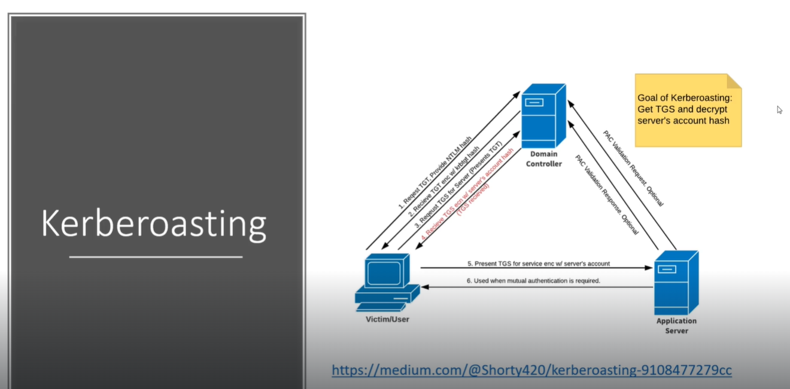

In this domain controller is also known as a key distribution center (KDC):
We also have our user which need's to authenticate to the Domain COntroller and when they do they are going to say that they request what is known as a Ticket Grantinh ticket aka NTLM hash
Any valid user (i.e. doesn't have to be admin) gets this ticket this is the authentication.
We have Fcastle and valid password Password1 which means valid tickey granting ticket.
Will use GetUserSPNs from Impacket Tool kit.

So this service here has what is called SPNthat us a service principal name.
KDC doesn't know that we have access to this server or not and provide us with TGS and this is where the kerberoasting stops.